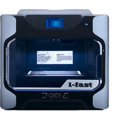
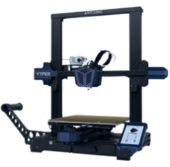
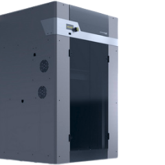
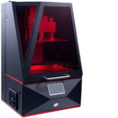
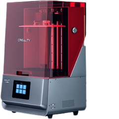
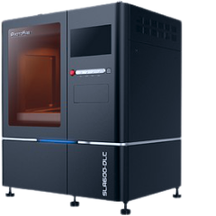
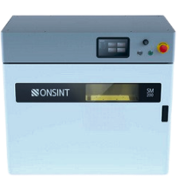

Для 3Д-печати мы используем точное и надёжное оборудование. Благодаря большому парку 3D принтеров ваш заказ будет выполнен именно на той машине, которая лучше всего подходит для данной задачи. К вашим услугам FDM, LCD, SLA, SLS, DLP, MJP, ILS, CJP, SLM, Polyjet и другие принтеры полупрофессионального, профессионального и промышленного уровня.

QIDI Tech i-Fast - этот полупрофессиональный
FDM-принтер может использовать двойной или одинарный высокотемпературный экструдер и имеет закрытую печатную камеру с терморегуляцией. Он способен работать со стандартными и с инженерными материалами.

Anycubic Vyper - это удобный, быстрый, простой в управлении, а, главное, очень надёжный FDM-принтер, способный раз за разом выдавать качественный результат. Vyper незаменим при решении бытовых задач - при печати изделий из PLA, PETG и даже из гибких пластиков.

Picaso Designer XL PRO - профессиональный FDM-принтер для прототипирования и мелкосерийного производства. Он способен одновременно печатать 2-мя материалами, обладает большой областью построения, а вспомогательные системы интеллектуального контроля обеспечивают ему высокое качество печати.

Anycubic Photon Mono X - идеальный вариант для быстрой фотополимерной печати небольших и среднеразмерных объектов. Его монохромная 4К матрица гарантирует высокую детализацию, механика обеспечивает необходимую точность печати, а скорость до 60 мм/ч делает принтер очень производительным.

Creality HALOT-MAX - современный фотополимерный принтер со впечатляющей областью построения и разрешением матрицы 4K, работающий по новейшей технологии ILS. Даже при печати крупноформатных объектов он сохраняет тончайшие детали, выдавая неизменно качественный результат, причём в короткие сроки.
SparkMaker Print Hero 4K Mono - высокоскоростной фотополимерный принтер с монохромной матрицей 4K и повышенной производительностью. Высокую скорость и безостановочную работу ему обеспечивает большой резервуар для смолы, а увеличенная область построения даёт возможность печатать габаритные изделия..

ProtoFab SLA600 DLC - этот SLA-принтер промышленного класса способен создавать прототипы и готовую продукцию любой сложности. Огромная область построения, высокая производительность и потрясающая точность позволяют ему печатать изделия для медицины, машиностроения и даже аэрокосмической отрасли.

ONSINT SM200 - промышленный 3Д-принтер, действующий по технологии селективного лазерного спекания SLS. В нём используются порошковый полиамид, полиуретан, полипропилен и биосовместимые порошки PA11 и PA12 для печати изделий с самой сложной геометрией и высокими механическими свойствами..